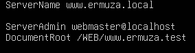

3- En la carpeta /etc/apache2/sites-available.
Copio el 000-default.conf a docs.ermuza.test.conf y a www.ermuza.test.conf
En la variable DocumentRoot ponemos la ruta que queramos dejar nuestra pagina web en mi caso he puesto /WEB/www.ermuza.test
En la variable ServerName he puesto la url con la que quiero que se busque mi servidor
sudo systemctl restart apache2: para reiniciar el servidor de apache y aplicar cambios.
NO TENGO PERMISOS PARA ENTRAR

En el fichero /etc/apache2/apache.conf esto por cada web cambiandole la ruta
<Directory "Ruta del servidor">
Options FollowSymLinks
AllowOverride None
Require all granted
</Directory>
Reinicio el server con el comando systemctl restart apache2
ComprobacionesDespues en la maquina virtual CLIENTE1 he ido a la ruta /etc/host y he puesto esta linea 192.168.5.52 www.ermuza.test
He probado a hacer un ping de www.ermuza.test y funciona correctamente
Y al buscar en un navegador en dns www.ermuza.test funciona correctamente
INSTALACIÓN DNS
Comandos instalación:
sudo apt install bind9 // instlación del bind9
sudo apt install dnsutils // instalación de los dnsutils
1- Cambios son en el fichero /etc/bind/named.conf.local
Arriba el dominio
Abajo se pone la ruta donde tienes la carpeta del servidor
Y ejecutamos sudo systemctl restart bind9
He hecho copiado el db que viene por defecto y lo he pasado a db.ermuza.test que tiene que coincidir con la ruta que hemos puesto en el fichero anterior
He he hecho varios cambios
Después de estos cambios ejecuto el siguiente comando: sudo systemctl restart bind9
FTP
Comando de instalación:
sudo apt intall vsftpd // para instalar el ftp
¿COMO FUNCIONA FTP?
Comando: sudo ftp "ip del servidor"
También se puede utilizar el filezillaInstalar filezilla
Comando: sudo apt install filezilla
ENJAULAR UN USUARIO
Ruta: /etc/passwd
En la linea que pone webcontent pongo la ruta que quiera.